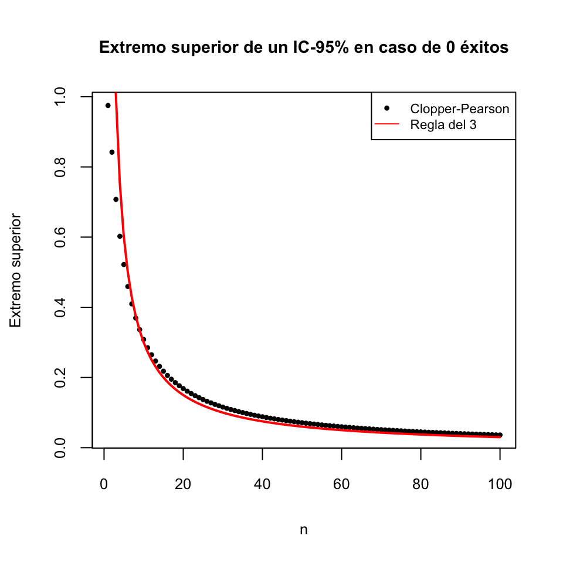
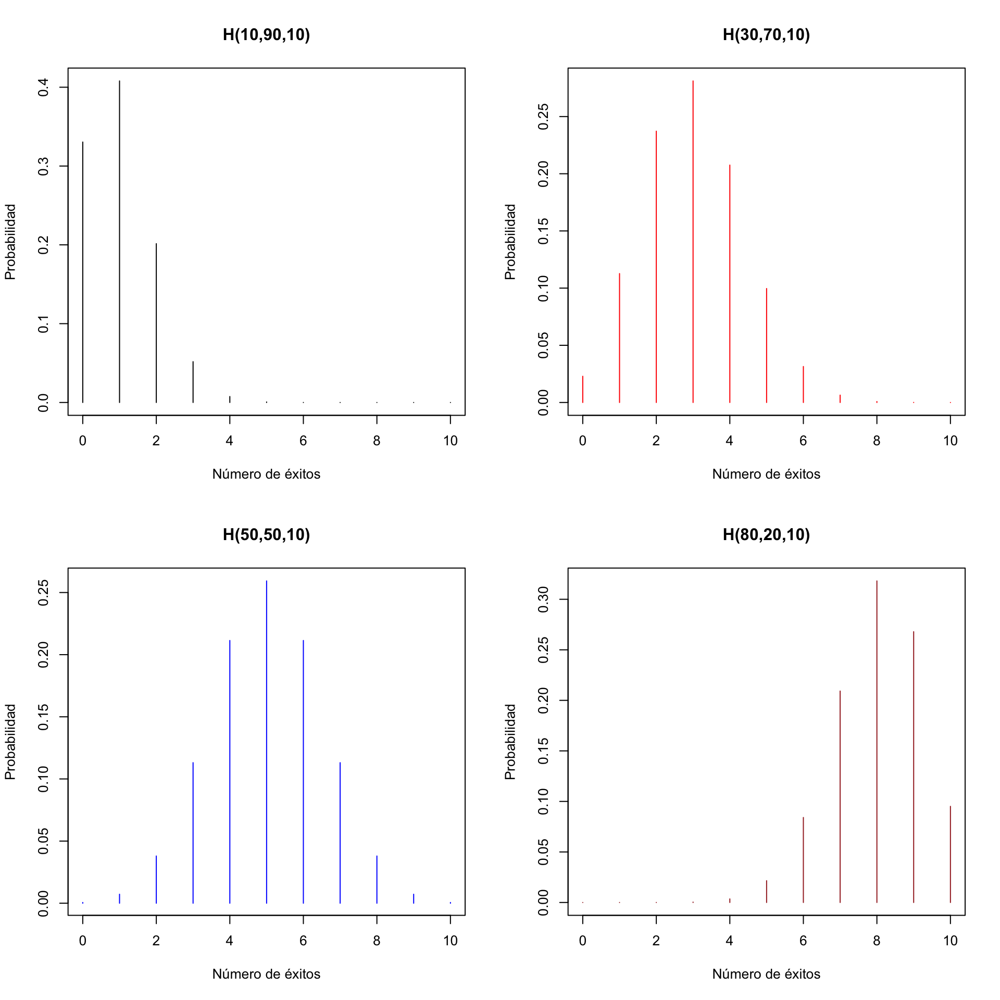
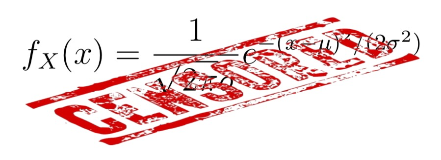
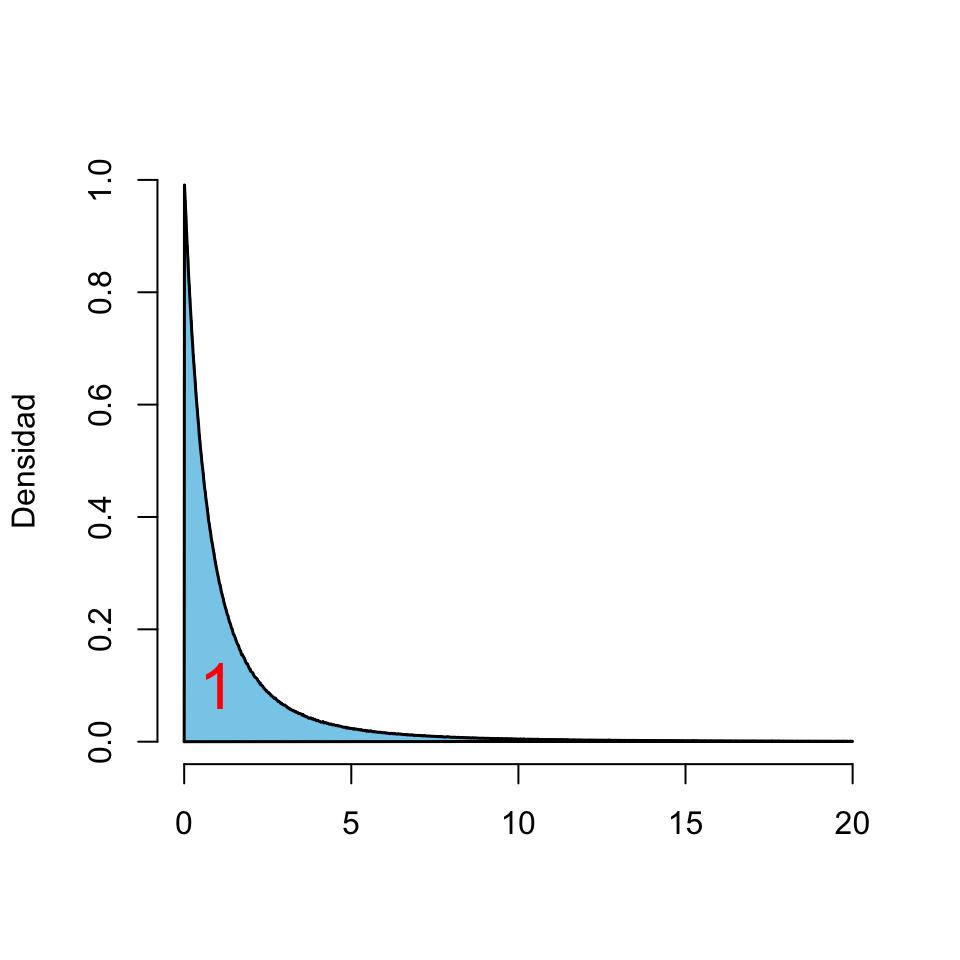
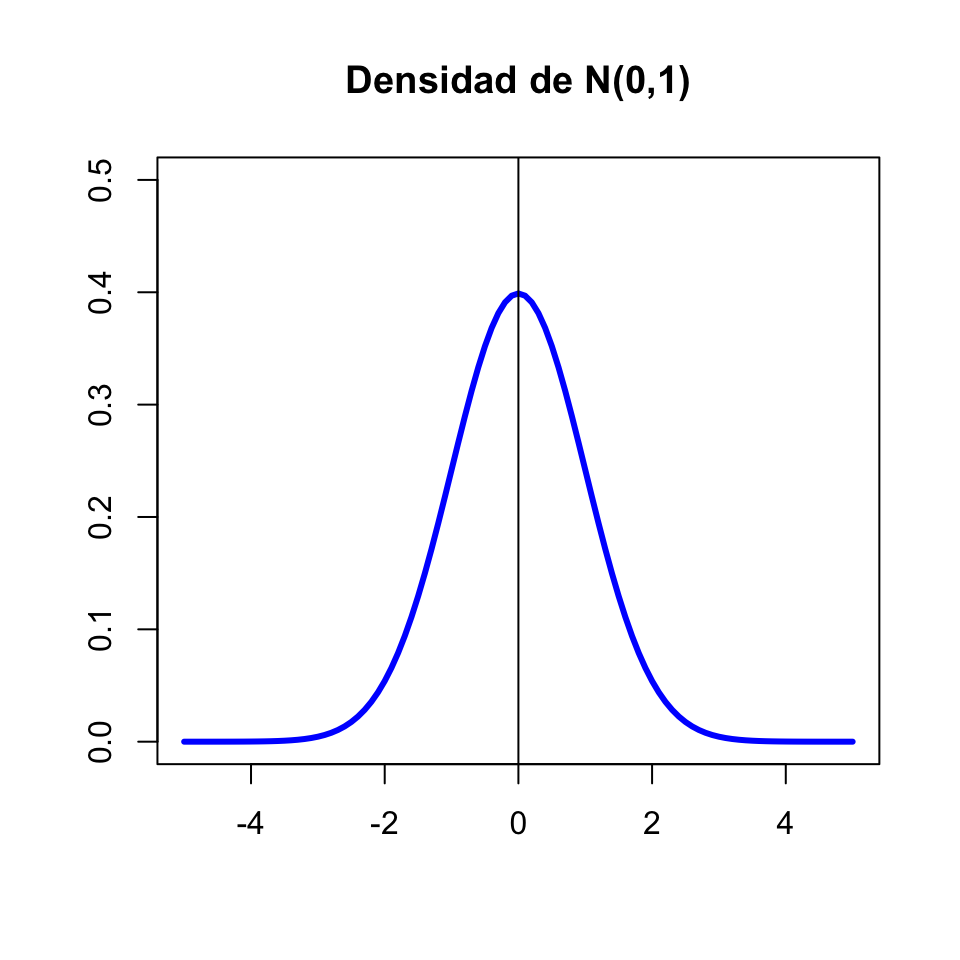
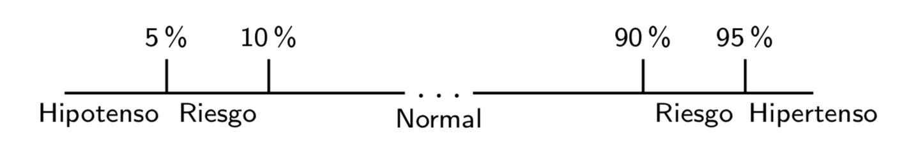

Lección 1 Variables aleatorias
1.1 Generalidades
Una variable aleatoria sobre una población \(\Omega\) es una aplicación \[ X: \Omega\to \mathbb{R} \] que asigna a cada sujeto de \(\Omega\) un número real. La idea intuitiva tras esta definición es que una variable aleatoria mide una característica de los sujetos de \(\Omega\) que varía al azar de un sujeto a otro. Por ejemplo:
Tomamos una persona de una población y medimos su nivel de colesterol, o su altura, o su número de hijos… En este caso, \(\Omega\) es la población bajo estudio, de la que tomamos la persona que medimos.
Lanzamos una moneda equilibrada 3 veces y contamos las caras que obtenemos. En este caso, \(\Omega\) es la población virtual de los lanzamientos 3 veces consecutivas de una moneda equilibrada.
Procurad, al menos al principio, adquirir la disciplina de describir siempre las variables aleatorias mediante una plantilla del estilo de “Tomamos … y medimos …”, para que os quede claro cuál es la población y cuál la función. Además, añadid las unidades si es necesario. Por ejemplo:
- “Tomamos una persona de Mallorca y medimos su altura (en cm)”.
Fijaos en que esta variable aleatoria no es la misma que
- “Tomamos una persona de Mallorca y medimos su altura (en m)”,
porque, aunque mide lo mismo sobre los mismos sujetos, les asigna números diferentes. Y también es diferente de
- “Tomamos una persona de Suecia y medimos su altura (en cm)”,
porque ha cambiado la población.
En cambio en
- “Lanzamos una moneda 3 veces al aire y contamos las caras”
no hay necesidad de especificar unidades, a no ser que vayáis a usar una unidad inesperada (yo qué sé, que contéis las caras en fracciones de docena).
¿Qué sucesos nos interesan cuando medimos características numéricas? Pues básicamente sucesos definidos mediante igualdades y desigualdades. Por ejemplo, si \(X\) es la variable aleatoria “Tomamos una persona y medimos su nivel de colesterol en plasma (en mg/dl)”, nos pueden interesar sucesos del estilo de:
El conjunto de las personas cuyo nivel de colesterol está entre 200 y 240. Lo denotaremos \[ 200\leq X\leq 240 \]
El conjunto de las personas cuyo nivel de colesterol es menor o igual que 200: \[ X\leq 200 \]
El conjunto de las personas cuyo nivel de colesterol es mayor que 180: \[ X>180 \]
El conjunto de las personas cuyo nivel de colesterol es exactamente 180: \[ X=180 \]
El conjunto de las personas cuyo nivel de colesterol es 180 o 182 o 184 o 200: \[ X\in\{180,182,184,200\} \]
etc.
Normalmente, de estos sucesos lo que nos interesará será su probabilidad, y entonces usaremos notaciones del estilo de las siguientes:
\(P(200\leq X\leq 240)\): Probabilidad de que una persona tenga el nivel de colesterol entre 200 y 240 (o, para abreviar, “probabilidad de que \(X\) esté entre 200 y 240”).
\(P(X\leq 200)\): Probabilidad de que una persona tenga el nivel de colesterol menor o igual que 200 (probabilidad de que \(X\) sea menor o igual que 240).
\(P(X>180)\): Probabilidad de que una persona tenga el nivel de colesterol mayor que 180 (probabilidad de que \(X\) sea mayor que 180).
\(P(X=180)\): Probabilidad de que una persona tenga nivel de colesterol igual a 180 (probabilidad de que \(X\) valga 180).
\(P(X\in\{180,182,184,200\})\): Probabilidad de que una persona tenga nivel de colesterol 180 o 182 o 184 o 200 (probabilidad de que \(X\) valga 180 o 182 o 184 o 200).
Recodad que nuestras probabilidades son proporciones. Por lo tanto, por ejemplo, \(P(200\leq X\leq 240)\) es la proporción de personas (de alguna población concreta) con nivel de colesterol entre 200 y 240.
En este contexto, indicaremos normalmente la unión con una o y la intersección con una coma. Por ejemplo, si \(X\) es la variable aleatoria “Lanzamos una moneda 6 veces y contamos las caras”:
\(P(X\leq 2\text{ o }X\geq 5)\): Probabilidad de sacar como máximo 2 caras o como mínimo 5.
\(P(2\leq X, X\leq 5)\): Probabilidad de sacar un numéro de caras que sea mayor o igual que 2 y menor o igual que 5. Naturalmente, esta probabilidad \(P(2\leq X\leq 5)\).
Dos variables aleatorias \(X,Y\) son independientes cuando, para todos los pares de valores \(a,b\in \mathbb{R}\), los sucesos \[ X\leq a, Y\leq b \] son independientes, es decir, \[ P(X\leq a, Y\leq b)=P(X\leq a)\cdot P(Y\leq b) \]
Por ejemplo, si tomamos una persona y:
\(X\): le pedimos que lance una moneda 3 veces y contamos las caras
\(Y\): medimos su nivel de colesterol en plasma (en mg/dl)
(seguramente) \(X\) e \(Y\) son independientes.
Más en general, unas variables aleatorias \(X_1,X_2,\ldots,X_n\) son independientes cuando, para todos \(a_1,a_2,\ldots,a_n\in \mathbb{R}\), los sucesos \[ X_1\leq a_1, X_2\leq a_2,\ldots, X_n\leq a_n \] son independientes.
Si \(X_1,X_2,\ldots,X_n\) son variables aleatorias independientes, se tiene que, para todos los subconjuntos \(A_1,\ldots, A_n\subseteq \mathbb{R}\) “razonables” (incluye todos los que os puedan interesar), los sucesos \[ X_1\in A_1, X_2\in A_2,\ldots, X_n\in A_n \] son también independientes, y por lo tanto en particular que \[ P(X_1\in A_1,\ldots,X_n\in A_n)=P(X_1\in A_1)\cdots P(X_n\in A_n) \]
Vamos a distinguir dos tipos de variables aleatorias:
Discretas: Sus posibles valores son datos cuantitativos discretos:
- Número de caras en 3 lanzamientos de una moneda
- Número de hijos
- Número de casos nuevos de COVID-19 en un día en una población
Continuas: Sus posibles valores (teóricos) son datos cuantitativos continuos:
- Peso
- Nivel de colesterol en sangre
- Diámetro de un tumor
1.2 Variables aleatorias discretas: Conceptos generales
1.2.1 Densidad y distribución
Sea \(X: \Omega\to \mathbb{R}\) una variable aleatoria discreta.
Su dominio \(D_X\) es el conjunto de posibles valores que puede tomar, es decir, el conjunto de los \(x\in \mathbb{R}\) tales que \(P(X=x)>0\).
Su función de densidad es la función \(f_X:\mathbb{R}\to [0,1]\) definida por \[ f_X(x)=P(X=x) \] Es decir, la función que asigna a cada \(x\in \mathbb{R}\) la probabilidad de que \(X\) valga \(x\) (la proporción de sujetos de la población en los que \(X\) vale \(x\)).
Su función de distribución es la función \(F_X:\mathbb{R}\to [0,1]\) definida por \[ F_X(x)=P(X\leq x) \] Es decir, la función que asigna a cada \(x\in \mathbb{R}\) la probabilidad de que el valor de \(X\) sea \(\leq x\) (la proporción de sujetos de la población en los que \(X\) vale \(\leq x\)).
Ejemplo 1.1 Sea \(X\) la variable aleatoria “Lanzamos 3 veces una moneda equilibrada y contamos las caras”. Entonces
Su dominio es el conjunto de sus posibles valores: \(D_X=\{0,1,2,3\}\).
Su función de densidad viene definida por \(f_X(x)=P(X=x)\):
- \(f_X(0)=P(X=0)=1/8\) (la probabilidad de sacar 0 caras)
- \(f_X(1)=P(X=1)=3/8\) (la probabilidad de sacar 1 cara)
- \(f_X(2)=P(X=2)=3/8\) (la probabilidad de sacar 2 caras)
- \(f_X(3)=P(X=3)=1/8\) (la probabilidad de sacar 3 caras)
- \(f_X(x)=P(X=x)=0\) para cualquier otro valor de \(x\) (la probabilidad de sacar \(x\) caras si \(x\notin\{0,1,2,3\}\) es 0)
En resumen, la función de densidad de \(X\) es \[ f_X(x) =\left\{ \begin{array}{ll} 1/8 & \text{ si $x=0$}\\ 3/8 & \text{ si $x=1$}\\ 3/8 & \text{ si $x=2$}\\ 1/8 & \text{ si $x=3$}\\ 0 & \text{ si $x\neq 0,1,2,3$} \end{array}\right. \]

Figura 1.1: Función de densidad de la variable aleatoria que cuenta el número de caras en 3 lanzamientos
Veamos su función de distribución \(F_X\). Recordad que \(F_X(x)=P(X\leq x)\) y que nuestra variable solo puede tomar los valores 0, 1, 2 y 3.
Si \(x<0\), \(F_X(x)=P(X\leq x)=0\) porque \(X\) no puede tomar ningún valor estrictamente negativo.
Si \(0\leq x<1\), \(F_X(x)=P(X\leq x)=P(X=0)=f_X(0)=1/8\), porque si \(0\leq x<1\), el único valor \(\leq x\) que puede tomar \(X\) es el 0.
Si \(1\leq x<2\), \(F_X(x)=P(X\leq x)=P(X=0\text{ o }X=1)=f_X(0)+f_X(1)=4/8=1/2\), porque si \(1\leq x<2\), los únicos valores \(\leq x\) que puede tomar \(X\) son 0 y 1.
Si \(2\leq x<3\), \(F_X(x)=P(X\leq x)=P(X=0\text{ o }X=1\text{ o }X=2)\) \(=f_X(0)+f_X(1)+f_X(2)=7/8\), porque si \(2\leq x<3\), los únicos valores \(\leq x\) que puede tomar \(X\) son 0, 1 y 2.
Si \(3\leq x\), \(F_X(x)=P(X\leq x)=1\), porque si \(3\leq x\), seguro que obtenemos un número de caras \(\leq 3\).
Por lo tanto, la función \(F_X\) es la función escalonada
\[ F_X(x) =\left\{ \begin{array}{ll} 0 & \text{ si $x<0$}\\ 1/8 & \text{ si $0\leq x< 1$}\\ 4/8 & \text{ si $1\leq x< 2$}\\ 7/8 & \text{ si $2\leq x< 3$}\\ 1 & \text{ si $3\leq x$} \end{array}\right. \]

Figura 1.2: Función de distribución de la variable aleatoria que cuenta el número de caras en 3 lanzamientos
El conocimiento de \(f_X\), más las reglas del cálculo de probabilidades, permite calcular la probabilidad de cualquier suceso relacionado con \(X\): \[ P(X\in A) =\sum_{a\in A} P(X=a) =\sum_{a\in D_X\cap A} P(X=a) = \sum_{a\in D_X\cap A} f_X(a) \] En particular \[ F_X(x)=P(X\leq x)=\sum_{a\in D_X,\ a\leq x} f_X(a) \]
1.2.2 Esperanza
La esperanza (o valor esperado, valor medio, valor promedio…) de una variable aleatoria discreta \(X\) con densidad \(f_X:D_X\to [0,1]\) es \[ E(X)=\sum_{x\in D_X} x\cdot f_X(x) \] También se suele denotar con \(\mu_X\) o simplemente \(\mu\) si no hace falta especificar la \(X\).
La interpretación de \(E(X)\) es que la media de los valores de la variable \(X\) en el total de la población \(\Omega\). En efecto, como \(P(X=x)\) es la proporción de los sujetos de \(\Omega\) en los que \(X\) vale \(x\), entonces \[ E(X)=\sum_{x\in D_X} x\cdot P(X=x) \] es el promedio del valor de \(X\) sobre todos los elementos de \(\Omega\). Comparadlo con el ejemplo siguiente.
Ejemplo 1.2 Si, en una clase, un 10% han sacado un 4 en un examen, un 20% un 6, un 50% un 8 y un 20% un 10, ¿cuál ha sido la nota media obtenida?
Suponemos que calcularíais esta media como \[ 4\cdot 0.1+6\cdot 0.2+8\cdot 0.5+10\cdot 0.2=7.6 \] Pues este valor es la esperanza de la variable aleatoria “Tomo un estudiante de esta clase y miro qué nota ha sacado en este examen”: \[ \begin{array}{rl} E(X)\!\!\!\!\! &=4\cdot P(X=4)+6\cdot P(X=6)+8\cdot P(X=8)+10\cdot P(X=10)\\ & = 4\cdot 0.1+6\cdot 0.2+8\cdot 0.5+10\cdot 0.2=7.6 \end{array} \]
Aparte de su interpretación como “el promedio de \(X\) en el total de la población”, \(E(X)\) es también el valor esperado de \(X\), en el sentido siguiente:
Es decir: si medimos \(X\) sobre muchos sujetos elegidos al azar y calculamos la media de los valores obtenidos, esperamos obtener un valor muy próximo a \(E(X)\).Suponed que tomamos una muestra aleatoria de \(n\) sujetos de la población, medimos \(X\) sobre ellos y calculamos la media aritmética de los \(n\) valores obtenidos. Entonces, cuando el tamaño \(n\) de la muestra tiende a \(\infty\), esta media aritmética tiende a valer \(E(X)\) “casi siempre”, en el sentido de que la probabilidad de que su límite sea \(E(X)\) es 1.
Ejemplo 1.3 Seguimos con la variable aleatoria \(X\) “Lanzamos una moneda al aire 3 veces y contamos las caras”. Su valor esperado es \[ E(X)= 0\cdot \frac{1}{8}+1\cdot \frac{3}{8}+2\cdot \frac{3}{8}+3\cdot \frac{1}{8}=1.5 \]
Esto nos dice que si repetimos muchas veces el experimento de lanzar la moneda 3 veces y contar las caras, la media de los resultados obtenidos será muy probablemente aproximadamente 1.5. Abreviamos esto diciendo que si lanzamos la moneda 3 veces, de media esperamos sacar 1.5 caras.
Más en general, si \(g:D_X\to \mathbb{R}\) es una aplicación, \[ E(g(X))=\sum_{x\in D_X} g(x)\cdot f_X(x) \] De nuevo, su interpretación natural es que es el promedio de \(g(X)\) sobre la población en la que medimos \(X\), y también es el valor “esperado” de \(g(X)\) en el sentido anterior.
\[ E(X^2)= 0\cdot \frac{1}{8}+1\cdot \frac{3}{8}+2^2\cdot \frac{3}{8}+3^2\cdot \frac{1}{8}=3 \]
Fijaos en que \(E(X^2) \neq E(X)^2\).
Por ejemplo, en los dos últimos ejemplos hemos visto que si \(X\) es la variable aleatoria que cuenta el número de caras en 3 lanzamientos de una moneda equilibrada, \(E(X^2)=3 \neq E(X)^2=1.5^2=2.25\).La esperanza de las variables aleatorias discretas tiene las propiedades siguientes, todas razonables si la interpretáis en términos del valor promedio de \(X\):
Si indicamos por \(b\) una variable aleatoria constante que sobre todos los individuos de la población toma el valor \(b\in \mathbb{R}\), entonces \(E(b)=b\).
Si en una clase todo el mundo saca un 8 de un examen, la media es 8, ¿no?
La esperanza es lineal:
Si \(a,b\in \mathbb{R}\), \(E(aX+b)=aE(X)+b\)
Si en una clase la media de un examen ha sido un 6 y decidimos multiplicar por 1.2 todas las notas y sumarles 1 punto, la media de la nueva nota será 1.2·6+1=8.2, ¿no?
Si \(Y\) es otra variable aleatoria, \(E(X+Y)=E(X)+E(Y)\).
Si en una clase la media de la parte de cuestiones de un examen ha sido un 3.5 (sobre 5) y la de la parte de ejercicios ha sido un 3 (sobre 5), la nota media del examen será un 3.5+3=6.5, ¿no?
La esperanza es monótona creciente: Si \(X\leq Y\) (en el sentido de que el valor de \(X\) sobre un sujeto de la población \(\Omega\) siempre es menor o igual que el valor de \(Y\) sobre el mismo sujeto), entonces \(E(X)\leq E(Y)\).
Si todos sacáis mejor nota de Anatomía que de Bioestadística, la nota media de Anatomía será mayor que la de Bioestadística, ¿no?
Más en general, si \(g(X)\leq h(X)\), entonces \(E(g(X))\leq E(h(X))\)
Pero atención, en general \(E(g(X)) \neq g(E(X))\), como ya hemos visto.
1.2.3 Varianza y desviación típica
La varianza de una variable aleatoria discreta \(X\) es \[ Var(X) =E((X-E(X))^2) =\sum_{x\in D_X} (x-E(X))^2\cdot f_X(x) \] Es la esperanza del cuadrado de la diferencia entre \(X\) y su valor medio \(E(X)\). Mide la dispersión de los resultados de \(X\) respecto de la media. También la denotaremos \(\sigma_X^2\) o \(\sigma^2\).
El resultado siguiente puede ser útil para calcularla “a mano”.
La desviación típica (o desviación estándar) de una variable aleatoria discreta \(X\) es la raíz cuadrada positiva de su varianza: \[ \sigma(X)=+\sqrt{Var(X)} \] También mide la dispersión de los valores de \(X\) respecto de la media. La denotaremos a veces por \(\sigma_X\) o \(\sigma\).
El motivo para introducir la varianza y la desviación típica para medir la dispersión de los valores de \(X\) es la misma que en estadística descriptiva: la varianza es más fácil de manejar (no involucra raíces cuadradas) pero sus unidades son las de \(X\) al cuadrado, mientras que las unidades de la desviación típica son las de \(X\), y por lo tanto su valor es más fácil de interpretar.
Ejemplo 1.5 Seguimos con la variable aleatoria \(X\) “Lanzamos una monea equilibrada 3 veces y contamos las caras”. Su varianza es:
\[ \begin{array}{rl} Var(X) \!\!\!\!\! & \displaystyle=(0-1.5)^2\cdot \frac{1}{8}+(1-1.5)^2\cdot \frac{3}{8}\\ &\displaystyle\qquad +(2-1.5)^2\cdot \frac{3}{8}+(3-1.5)^2\cdot \frac{1}{8}\\ & =0.75 \end{array} \] Si recordamos que \(E(X)=1.5\), \(E(X^2)=3\), podemos ver que \[ E(X^2)-E(X)^2=3-1.5^2=0.75=Var(X) \] Su desviación típica es \[ \sigma(X) =\sqrt{Var(X)}=\sqrt{0.75}= 0.866 \]
Veamos algunas propiedades de la varianza y la desviación típica:
- Si \(b\) es una variable aleatoria constante que sobre todos los individuos de la población toma el valor \(b\in \mathbb{R}\), entonces \(Var(b)=\sigma(b)=0\).
Una variable aleatoria constante tiene 0 dispersión, ¿no?
- \(Var(aX+b)=a^2\cdot Var(X)\).
\(\sigma(aX+b)=|a|\cdot \sigma(X)\) (recordad que la desviación típica es positiva, y \(+\sqrt{a^2}=|a|\)).
Si \(X,Y\) son variables aleatorias independientes, \[ Var(X+Y)=Var(X)+Var(Y) \]
Si no son independientes, en general esta igualdad es falsa. Por poner un ejemplo extremo, \(Var(X+X)\neq Var(X)+Var(X)\).
1.2.4 Cuantiles
Sea \(p\in [0,1]\). El cuantil de orden \(p\) (o \(p\)-cuantil) de una variable aleatoria \(X\) discreta es el valor \(x_p\in D_X\) tal que:
- \(P(X\leq x_p)\geq p\).
- \(P(X< x_p)<p\)
Por ejemplo, que el 0.25-cuantil de una variable aleatoria discreta \(X\) sea, yo qué sé, 8, significa que al menos una cuarta parte de la población tiene un valor de \(X\) menor o igual que 8, pero menos de un 25% de la población que tiene un valor de \(X\) estrictamente menor que 8..
Como en estadística descriptiva, algunos cuantiles de variables aleatorias tienen nombres propios. Por ejemplo:
La mediana de \(X\) es su 0.5-cuantil
El primer y el tercer cuartiles de \(X\) son sus \(0.25\)-cuantil y \(0.75\)-cuantil, respectivamente.
Etc.
Ejemplo 1.6 Seguimos con la variable aleatoria \(X\) “Lanzamos una monea equilibrada 3 veces y contamos las caras”. Recordemos que su función de distribución es
\[ F_X(x)=\left\{ \begin{array}{ll} 0 & \text{ si $x<0$}\\ 0.125 & \text{ si $0\leq x<1$}\\ 0.5 & \text{ si $1\leq x<2$}\\ 0.875 & \text{ si $2\leq x<3$}\\ 1 & \text{ si $3\leq x $} \end{array} \right. \]
Entonces, por ejemplo:
Su 0.125-cuantil es 0
Su 0.25-cuantil es 1
Su mediana es 1
Su 0.75-cuantil es 2
No confundáis variable aleatoria con muestra. Aunque usamos “media”, “varianza”, “cuantiles”, etc. en ambos contextos, significan cosas diferentes.
Una variable aleatoria representa una característica númerica de los sujetos de una población:
- “Tomamos un estudiante de medicina españoles y medimos su altura en m.”
La “media” o la “varianza” de esta variable son las de toda la población. La llamaremos, cuando queramos recalcarlo poblacionales.
Una muestra de una variable aleatoria son los valores de la misma sobre un subconjunto (relativamente pequeño) de la población.
- Medimos las alturas en m de 50 estudiantes de medicina españoles de este curso.
La “media” o la “varianza” de esta muestra son solo las de esas 50 alturas.
De hecho, con la “media” y la “varianza” de esta muestra seguramente lo que querremos será estimar la media y la varianza poblacionales.
1.3 Familias importantes de variables aleatorias discretas
En esta sección vamos a describir tres familias de variables aleatorias “distinguidas” que tenéis que conocer:
- Binomial
- Hipergeométrica
- Poisson
Cada una de estas familias tienen un tipo específico de función de densidad.
De estas familias de variables tenéis que saber:
- Distinguirlas: saber cuando una variable aleatoria es de una familia de estas.
- Su densidad, su valor esperado y su varianza.
- Usar algún programa o alguna aplicación para calcular cosas con ellas cuando sea necesario.
1.3.1 Variables aleatorias binomiales
Un experimento de Bernoulli es una acción con solo dos posibles reultados, que identificamos con “Éxito” (\(E\)) y “Fracaso” (\(F\)), y de la que no podemos predecir su resultado debido a la influencia del azar. Por ejemplo, lanzar un dado y mirar si ha salido un 6 (\(E\): sacar un 6; \(F\): cualquier otro resultado).
La probabilidad de éxito \(p\) de un experimento de Bernoulli es la probabilidad de obtener \(E\). Es decir, \(P(E)=p\). Naturalmente, entonces, \(P(F)=1-p\).
Por ejemplo:
- Lanzar una moneda equilibrada y mirar si da cara (\(E\): dar cara; \(p=1/2\)).
- Realizar un test PCR de COVID-19 a una persona y mirar si da positivo (\(E\): dar positivo; \(p\): la proporción de personas de la población de la que hemos extraído nuestro sujeto que dan positivo en el test).
Una variable aleatoria binomial de parámetros \(n\) y \(p\) (abreviadamente, \(B(n,p)\)) es una variable aleatoria \(X\) que cuenta el número de éxitos \(E\) en una secuencia de \(n\) repeticiones independientes de un mismo experimento de Bernoulli de probabilidad de éxito \(p\). Independientes significa que resultado de una no depende de los resultados de las otras.
Llamaremos a \(n\) el tamaño de las muestras y a \(p\) la probabilidad (poblacional) de éxito. A veces también diremos que una variable \(X\) \(B(n,p)\) tiene distribución binomial de parámetros \(n\) y \(p\).
Por ejemplo:
Realizar un experimento de Bernoulli de parámetro \(p\) y anotar 1 si resulta en éxito y 0 si resulta en fracaso es una variable binomial \(B(1,p)\).
Lanzar una moneda equilibrada 10 veces y contar las caras es una variable binomial \(B(10,0.5)\)
Elegir 20 personas al azar, una tras otra, permitiendo repeticiones y de manera independiente las unas de las otras, realizar sobre ellas un test PCR y contar cuántos dan positivo: es binomial \(B(20,p)\) con \(p\) la probabilidad de que el test dé positivo.
El tipo más común de variables binomiales en medicina es este último:
Tenemos el resultado siguiente.
Teorema 1.2 Si \(X\) es una variable \(B(n,p)\):
Su dominio es \(D_X=\{0,1,\ldots,n\}\)
Su función de densidad es \[ f_X(k)=\left\{\begin{array}{ll} \displaystyle\binom{n}{k}p^k(1-p)^{n-k} & \text{ si $k\in D_X$}\\ 0 & \text{ si $k\notin D_X$} \end{array}\right. \]
Su valor esperado es \(E(X)=np\)
Su varianza es \(Var(X)=np(1-p)\)
El tipo de teorema anterior es el que hace que nos interese estudiar algunas familias distinguidas de variables aleatorias. Si, por ejemplo, reconocemos que una variable aleatoria es binomial y conocemos sus valores de \(n\) y \(p\) y sabemos el teorema anterior, automáticamente sabemos su función de densidad, y con ella su función de distribución, su valor esperado, su varianza etc., sin necesidad de deducir toda esta información cada vez que encontremos una variable de estas.
Supongamos que efectuamos \(n\) repeticiones consecutivas e independientes de un experimento de Bernoulli de probabilidad de éxito \(p\) y contamos el número de éxitos \(E\); llamaremos \(X\) a la variable aleatoria resultante. Para seguir la demostración, si no os sentís muy cómodos con el razonamiento con \(n\)’s y \(k\)’s abstractos, vosotros id repitiéndolo tomando, por ejemplo, \(n=4\).
Los posibles resultados son todas las palabras posibles de \(n\) letras formadas por \(E\)’s y \(F\)’s. Como los experimentos sucesivos son independientes, la probabilidad de cada una de estas palabras es el producto de las probabilidades de sus resultados individuales. Por lo tanto, si una palabra concreta tiene \(k\) letras \(E\) y \(n-k\) letras \(F\) (se han obtenido \(k\) éxitos y \(n-k\) fracasos), su probabilidad es \(p^k(1-p)^{n-k}\), independientemente del orden en el que hayamos obtenido los resultados.
Para calcular la probabilidad de obtener una secuencia con \(k\) éxitos, sumaremos las probabilidades de obtener cada una de las secuencias de \(k\) letras. Como todas tienen la misma probabilidad, el resultado será la probabilidad de una palabra con \(k\) \(E\)’s y \(n-k\) \(F\)’s multiplicada por el número total de palabras diferentes con \(k\) \(E\)’s y \(n-k\) \(F\)’s.
¿Cuántas palabras hay con \(k\) \(E\)’s y \(n-k\) \(F\)’s? Cada una queda caracterizada por las posiciones de las \(k\) \(E\)’s, por lo tanto es el número de posibles elecciones de conjuntos de \(k\) posiciones para las \(E\)’s. Este es el número de posibles subconjuntos de \(k\) elementos (las posiciones donde habrá las \(E\)’s) de \(\{1,\ldots,n\}\), que es el número combinatorio \(\binom{n}{k}\). Por lo tanto ya tenemos \[ P(X=k)=\binom{n}{k}p^k(1-p)^{n-k}. \]
A partir de aquí, el cálculo del valor esperado y la varianza es sumar \[ \begin{array}{l} \displaystyle E(X)=\sum_{k=0}^n k\cdot p^k(1-p)^{n-k}\\ \displaystyle Var(X)=\sum_{k=0}^n k^2\cdot p^k(1-p)^{n-k}-\Big(\sum_{k=0}^n k\cdot p^k(1-p)^{n-k})^2 \end{array} \] Os podéis fiar de nosotros, dan \(np\) y \(np(1-p)\), respectivamente.
El valor de \(E(X)\) es razonable. Veamos, si tomáis una muestra aleatoria de \(n\) sujetos de una población en la que la proporción de sujetos \(E\) es \(p\), ¿cuántos sujetos \(E\) “esperáis” obtener en vuestra muestra? Pues una proporción \(p\) de la muestra, es decir \(p\cdot n\), ¿no?
Conocer las propiedades de las variables aleatorias binomiales solo es útil si sabemos reconocer cuándo estamos ante una de ellas. Fijaos que en una variable aleatoria binomial:
Contamos cuántas veces ocurre un suceso (el éxito \(E\)) en una secuencia de intentos.
En cada intento, el suceso que nos interesa pasa o no pasa, sin términos medios.
El número de intentos es fijo, \(n\).
Cada intento es independiente de los otros.
En cada intento, la probabilidad de que pase el suceso que nos interesa es siempre la misma, \(p\).
Por ejemplo:
Una mujer tiene 4 hijos. La probabilidad de que un hijo sea niña es fija, 0.51. El sexo de cada hijo es independiente de los otros. Contamos cuántas hijas tiene.
Se trata de una variable binomial \(B(4,0.51)\).
En una aula hay 5 chicos y 45 chicas. Escojo 10 estudiantes, uno tras otro y sin repetirlos, para hacerles una pregunta. Cada elección es independiente de las otras. Cuento cuántos chicos he interrogado.
No se trata de una variable binomial: como no podemos repetir, en cada ronda la probabilidad de escoger un chico depende del sexo de los estudiantes elegidos antes que él. Por lo tanto la \(p\) no es la misma en cada elección.
En una aula hay 5 chicos y 45 chicas. Escojo 10 estudiantes, uno tras otro pero cada estudiante puede ser elegido más de una vez, para hacerles una pregunta. Cada elección es independiente de las otras. Cuento cuántos chicos he interrogado.
Ahora sí que se trata de una variable binomial \(B(10,0.9)\).
En una aula hay 5 chicos y 45 chicas. Escojo estudiantes uno tras otro y cada estudiante puede ser elegido más de una vez, para hacerles una pregunta. Cada elección es independiente de las otras. Cuento cuántos estudiantes he tenido que elegir para interrogar a 5 chicos.
No se trata de una variable binomial: no cuénta el número de éxitos en una secuencia de un número fijo de intentos, sino cuántos intentos necesito para llegar a un número fijo de éxitos.
En una aula hay 5 chicos y 45 chicas. Lanzo una moneda equilibrada: si sale cara escojo 10 estudiantes y si sale cruz escojo 20, para hacerles una pregunta. Tanto en un caso como en el otro, los elijo uno tras otro pero cada estudiante puede ser elegido más de una vez y cada elección es independiente de las otras. Cuento cuántos chicos he interrogado.
No se trata de una variable binomial: el número de intentos no es fijo.
La probabilidad de que un día de noviembre llueva es de un 32%. Escogemos una semana de noviembre y contamos cuántos días ha llovido.
No se trata de una variable binomial. Aunque cada día tenga la misma probabilidad de lluvia, que llueva un día no es independiente de que llueva el anterior.
En España hay 46,700,000 personas, de las cuales un 11.7% son diabéticos. Escogemos 100 españoles diferentes al azar (de manera independiente unos de otros) y contamos cuántos son diabéticos.
No es binomial, pero prácticamente sí que lo es, porque las probabilidades apenas varían de una elección a la siguiente. En este caso haremos la trampa de considerarla binomial.
¿Cómo efectuar cálculos con una variable aleatoria de una familia dada?
Una posibilidad es usar una aplicación de móvil o tablet. Nuestra favorita es Probability distributions, disponible tanto para Android como para iOS.

Figura 1.3: La app Probability Distributions.
Otra posibilidad es usar R. R conoce todas la distribuciones de variables aleatorias importantes; por ejemplo, para R la binomial es binom. Entonces
Añadiendo al nombre de la distribución el prefijo
d, tenemos su función de densidad: de la binomial, serádbinom.Añadiendo al nombre de la distribución el prefijo
p, tenemos su función de distribución: de la binomial, serápbinom.Añadiendo al nombre de la distribución el prefijo
q, tenemos sus cuantiles: para la binomial,qbinom.Añadiendo al nombre de la distribución el prefijo
r, tenemos una función que produce muestra aleatorias de números con esa distribución de probabilidad: para la binomial,rbinom.
Estas funciones se aplican al argumento de la función y los parámetros de la variable aleatoria en su orden usual (todo entre paréntesis y separados por comas). Por ejemplo, para la binomial, se aplican a (argumento, \(n\), \(p\)).
Veamos ejemplos de la binomial.
- Si lanzamos 20 veces una moneda equilibrada, ¿cuál es la probabilidad de sacar exactamente 6 caras? Si llamamos \(X\) a la variable aleatoria que cuenta el número de caras en secuencias de 20 lanzamientos de una moneda equilibrada, se trata de una variable binomial \(B(20,0.5)\). Nos piden \(P(X=6)\), y esta probabilidad nos la da la función de densidad de \(X\). Es \(f_X(6)\):
## [1] 0.03696442- Si lanzamos 20 veces una moneda equilibrada, ¿cuál es la probabilidad de sacar como máximo 6 caras? Con las notaciones anteriores, nos piden \(P(X\leq 6)\), y esta probabilidad nos la da la función de distribución de \(X\). Es \(F_X(6)\):
## [1] 0.05765915- Si lanzamos 20 veces una moneda equilibrada, ¿cuál es la probabilidad de sacar más de 6 caras? Con las notaciones anteriores, nos piden \(P(X> 6)=1-P(X\leq 5)=1-F_X(5)\):
## [1] 0.9423409- Si lanzamos 20 veces una moneda al aire, ¿cuál es el primer número de caras \(N\) para el que la probabilidad de sacar como máximo \(N\) caras llega al 25%? Nos piden el primer valor \(N\) tal que \(P(X\leq N)\geq 0.25\), y esto por definición es el 0.25-cuantil de \(X\):
## [1] 8Veamos que en efecto \(N=8\) cumple lo pedido: la probabilidad de sacar como máximo 8 caras es
## [1] 0.2517223y la probabilidad de sacar como máximo 7 caras es
## [1] 0.131588Vemos por tanto que con 7 caras no llegamos al 25% de probabilidad y con 8 sí.
- Queremos simular 50 rondas de lanzar 20 veces una moneda equilibrada y contar las caras, es decir, queremos una muestra aleatoria de tamaño 10 de nuestra variable \(X\):
## [1] 9 12 7 13 9 12 12 8 10 14 9 6 11 9 10 12 12 10 7 12 15 8 13 12 9
## [26] 9 12 10 13 12 11 9 12 9 15 7 10 11 10 12 11 15 11 8 15 14 9 4 10 11Cada vez que repitamos esta instrucción obtendremos una muestra aleatoria nueva:
## [1] 6 7 11 10 7 8 10 9 9 10 11 10 10 10 8 8 7 14 12 12 11 11 10 12 10
## [26] 8 14 11 14 11 8 11 11 14 9 7 5 10 10 11 14 10 9 13 3 11 8 13 11 9## [1] 9 12 12 11 14 10 8 7 13 10 9 10 8 6 7 12 10 11 10 11 12 12 8 10 11
## [26] 11 11 10 11 8 15 7 14 8 12 6 12 7 9 10 7 7 10 9 6 13 11 11 9 10## [1] 10 10 12 8 14 10 7 12 9 9 14 9 9 8 6 9 8 13 9 6 11 10 11 10 12
## [26] 13 9 12 10 10 6 9 12 7 11 7 12 11 9 7 10 17 13 13 8 6 11 8 11 11Veamos algunos gráficos de la función densidad de variables aleatorias binomiales.


Por cierto, R también tiene una función para calcular la probabilidad de que se dé alguna repetición en una muestra aleatorias simple de un tamaño dado. En concreto:
La instrucción
pbirthday(n,N)nos da la probabilidad de que en una muestra aleatoria simple de tamaño n de una población de tamaño N haya algún elemento repetido.La instrucción
qbirthday(p,N)nos da el tamaño mínimo de una muestra aleatoria simple de una población de tamaño N para que la probabilidad de que haya algún elemento repetido sea \(\geq p\).
El nombre birthday hace referencia a la paradoja del cumpleaños: el típico problema de calcular la probabilidad de que dos estudiantes de una clase celebren el cumpleaños el mismo día y asombrarse de que en una clase de 30 estudiantes haya más de un 70% de probabilidades de que haya algún cumpleaños repetido.
## [1] 0.70530341.3.2 Variables aleatorias hipergeométricas
Recordad que el paradigma de variable aleatoria binomial es: tengo una población con una proporción \(p\) de sujetos que satisfacen una condición \(E\), tomo una muestra aleatoria simple de tamaño \(n\) y cuento el número de sujetos \(E\) en mi muestra. Si cambiamos “muestra aleatoria simple” por “muestra aleatoria sin reposición”, la distribución de la variable aleatoria que obtenemos es otra: la hipergeométrica.
Una variable aleatoria es hipergeométrica (o tiene distribución hipergeométrica) de parámetros \(N\), \(M\) y \(n\) (\(H(N,M,n)\), para abreviar) es cualquier variable aleatoria \(X\) que podáis identificar con el proceso siguiente: Tenemos una población formada por \(N\) sujetos que satisfacen una condición \(E\) y \(M\) sujetos que no la satisfacen (por lo tanto, en total, \(N+M\) sujetos en la población), tomo una muestra aleatoria sin reposición de tamaño \(n\) y cuento el número de sujetos \(E\) en mi muestra.
Llamaremos a \(N+M\) el tamaño de la población, a \(N/(N+M)\) la probabilidad (poblacional) de éxito, y a \(n\) el tamaño de las muestras. Con R, igual que la distribución binomial era binom, la distribución hipergeométrica es hyper.
Teorema 1.3 Si \(X\) es una variable \(H(N,M,n)\):
Su dominio es \(D_X=\{0,1,\ldots,\text{min}(N,n)\}\)
Su función de densidad es \[ f_X(k)=\left\{\begin{array}{ll} \displaystyle\dfrac{\binom{N}{k}\cdot \binom{M}{n-k}}{\binom{N+M}{n}} & \text{ si $k\in D_X$}\\ 0 & \text{ si $k\notin D_X$} \end{array}\right. \]
Su valor esperado es \(E(X)=\dfrac{nN}{N+M}\)
Su varianza es \(Var(X)=\dfrac{nNM(N+M-n)}{(N+M)^2(N+M-1)}\)
Fijaos que si llamamos \(p\) a la probabilidad poblacional de éxito, \(p=N/(N+M)\) y \(\mathbf{P}\) al tamaño de la población, \(\mathbf{P}=N+M\), entonces \[ E(X)=np \] la misma fórmula que para las variables binomiales \(B(n,p)\) (y si lo pensáis un rato veréis que, de nuevo y por el mismo argumento, es lo razonable), y \[ Var(X)=np(1-p)\cdot\dfrac{\mathbf{P}-n}{\mathbf{P}-1} \] que es la varianza de una variable \(B(n,p)\) multiplicada por un valor debido al hecho de que ahora tomamos muestras sin repetición y la varianza es más pequeña que si las tomamos con repetición. A este factor \((\mathbf{P}-n)/(\mathbf{P}-1)\) se le llama factor de población finita. Fijaos que si \(\mathbf{P}\) es muchísimo más grande que \(n\), tendremos que \(\mathbf{P}-n\approx \mathbf{P}-1\) y por lo tanto \((\mathbf{P}-n)/(\mathbf{P}-1)\approx 1\) y la varianza de la hipergeométrica será aproximadamente la de la binomial. Esto es consistente con lo que ya hemos comentado: si la población es mucho más grande que la muestra, tomar las muestras con o sin reposición no afecta demasiado a las muestra obtenidas, por lo que la distribución de probabilidad ha de ser muy parecida. Recordad el ejemplo:
En España hay 46,700,000 personas, de las cuales un 11.7% son diabéticos. Escogemos 100 españoles y contamos cuántos son diabéticos.
Esta variable es, en realidad, hipergeométrica \(H(5463900, 41236100,100)\) (\(N=0.117\cdot 46700000\) y \(M=46700000-N\)) pero en la práctica la consideramos binomial. El factor de población finita es \[ \frac{46700000-100}{46700000-1}=0.9999979 \]
En cambio:
En una aula hay 5 chicos y 45 chicas. Escojo 10 estudiantes, uno tras otro y sin repetirlos, para hacerles una pregunta. Cada elección es independiente de las otras. Cuento cuántos chicos he interrogado.
Esta variable es, en realidad, hipergeométrica \(H(5,45,10)\). El factor de población finita en esta caso no es aproximadamente 1: da \[ \frac{50-10}{50-1}=0.8163 \]
El gráfico siguiente compara la densidad de una \(B(10,0.1)\) con las de unas hipergeométricas \(H(5,45,10)\), \(H(50,450,10)\) y \(H(5000,45000,10)\) para que veáis cómo a medida que el tamaño de la población crece (manteniendo la probabilidad poblacional de éxito), la hipergeométrica se aproxima a la binomial.

1.3.3 Variable aleatorias de Poisson
Una variable aleatoria \(X\) es de Poisson (o tiene distribución de Poisson) con parámetro \(\lambda>0\) (\(Po(\lambda)\), para abreviar) cuando:
Su dominio es \(D_X=\mathbb{N}\), el conjunto de todos los números naturales (es decir, puede tomar cualquier valor de \(\mathbb{N}\)),
Su función de densidad es \[ f_X(k)=\left\{\begin{array}{ll} e^{-\lambda}\cdot \dfrac{\lambda^k}{k!} & \text{ si $k\in \mathbb{N}$}\\ 0 & \text{ si $k\notin \mathbb{N}$} \end{array}\right. \]
Para R, la distribución Poisson es pois.
Si \(X\) es una variable \(Po(\lambda)\), entonces \[ E(X)= Var(X)= \lambda \] Es decir, el “parámetro” \(\lambda\) de una variable de Poisson es su valor esperado, y coincide con su varianza.
Suponemos que os estáis preguntando: ¿para qué nos sirve definir una variable de Poisson mediante su densidad, si lo que nos interesa es poder clasificar una variable como de Poisson (o binomial, o hipergeométrica etc.) para así saber “gratis” su densidad? Bueno, la respuesta es que la familia Poisson incluye unas variables aleatorias muy comunes.
Supongamos que tenemos un tipo de objetos que pueden darse en una región continua de tiempo o espacio. Por ejemplo, defunciones de personas por una determinada enfermedad en el decurso del tiempo, defunciones de personas por una determinada enfermedad en diferentes zonas geográficas de un país, o números de bacterias en trozos de una superficie. Supongamos además que las apariciones de estos objetos satisfacen las propiedades siguientes:
Las apariciones de los objetos son aleatorias: en cada instante del tiempo, o punto del espacio, un objeto se da, o no, al azar con una probabilidad fija y constante.
Las apariciones de los objetos son independientes: que se dé un objeto en un instante del tiempo, o en un punto del espacio, concreto, no depende de que se haya dado o no un objeto en otro instante del tiempo o punto del espacio.
Las apariciones de los objetos no son simultáneas: es prácticamente imposible que dos objetos de estos se superpongan (aparezcan en el mismo instante exacto del tiempo o en el mismo punto exacto del espacio).
Por ejemplo, cuando lo que cuentan ocurre al azar, son variables de Poisson:
El número de enfermos admitidos en urgencias en un día (o en 12 horas, o en una semana…)
El número de defunciones por una enfermedad concreta en un día (o en una semana, o en un año…)
El número de bacterias en un cudadrado de 1 cm de lado (o de 1 m de lado…)
Fijaos en que este tipo de conocimiento nos sirve para dos cosas:
Si sabemos que son Poisson, podemos calcular lo que queramos para estas variables.
Si los datos que observamos no parece que sigan una distribución Poisson (por ejemplo, porque su varianza sea muy diferente de su media), entonces los que cuentan no ocurre al azar y es señal de que algo “no aleatorio” está pasando.
Ejemplo 1.7 Observad la diferencia entre las dos variables siguientes:
Número anual de defunciones por un tipo de cáncer. El momento exacto de las defunciones se produce al azar, podemos entender que no se dan dos defunciones exactamente en el mismo instante, con precisión infinita, y las defunciones se producen de manera independiente. Es Poisson.
Número anual de defunciones en accidentes de tráfico. De nuevo, el momento exacto de las defunciones se produce al azar y podemos entender que no se dan dos defunciones exactamente en el mismo instante, con precisión infinita. Pero las muertes en accidentes de tráfico no son independientes: en un mismo accidente mortal se pueden producir varias muertes en un corto espacio de tiempo, las condiciones metereológicas o de la carretera pueden hacer que aumente durante un cierto período de tiempo la probabilidad de accidente mortal, etc. No es Poisson.
Como las apariciones de los objetos que cuenta una variable de Poisson son aleatorias e independientes, el número medio de objetos es lineal en el tamaño de la región. Por ejemplo, si se diagnostican de media 32,240 casos de cáncer de colon anuales en España (y siguen una ley de Poisson), esperamos que de media se diagnostiquen 32240/52=620 casos semanales.
Formalmente: \[ \lambda_{x\cdot t}=x\cdot \lambda_{t}\text{ y en particular, }\lambda_t=t\cdot \lambda_1 \]
1.4 Variables aleatorias continuas: Conceptos generales
1.4.1 Densidad y distribución
En este curso nos vamos a restringir variables aleatorias continuas \(X: \Omega\to \mathbb{R}\) que satisfacen la siguiente propiedad extra: su función de distribución \[ \begin{array}{rcl} F_X: \mathbb{R} & \to & [0,1]\\ x &\mapsto &P(X\leq x) \end{array} \] es continua.
Fijaos entonces que, si \(X\) es una variable aleatoria continua, \[ P(X=a)=0 \text{ para todo $a\in \mathbb{R}$}. \]
En efecto, \[ \begin{array}{rl} P(X=a)\!\!\!\!\! & =P(X\leq a)-P(X<a)=P(X\leq a)- P\Big(\bigcup_{n\geq 1}\Big(X\leq a-\dfrac{1}{n}\Big)\Big)\\ & \displaystyle = P(X\leq a)-\lim_{n\geq 1} P\Big(X\leq a-\dfrac{1}{n}\Big)\\ & \displaystyle = F_X(a)-\lim_{n\geq 1} F_X\Big(a-\dfrac{1}{n}\Big)=0 \end{array} \] por la continuidad de la \(F_X\).
En particular, para una variable aleatoria continua, probabilidad 0 no significa imposible. Cada valor de \(X\) tiene probabilidad 0, pero cuando tomamos un sujeto, algún valor de \(X\) tendrá, por lo que ese valor ha de ser posible.
De \(P(X=a)=0\) se deduce que la probabilidad de un suceso definido con una desigualdad es exactamente la misma que la del suceso correspondiente definido con una desigualdad estricta. Por ejemplo:
- \(P(X\geq a)=P(X> a)+P(X=a)=P(X> a)\)
- \(P(a\leq X\leq a)=P(a<X<b)+P(X=a)+P(X=b)\) \(=P(a<X<b)\)
Como \(P(X=a)=0\), no podemos definir la densidad como \(f_X(a)=P(X=a)\). Pero recordad que, en las variables aleatorias discretas \[ F_X(a)=\sum_{x\leq a} f_X(x) \]
En el contexto de matemáticas “continuas”, la suma \(\sum\) se traduce en la integral \(\int\). Se define entonces la función de densidad de una variable aleatoria continua \(X\) como la función \(f_X:\mathbb{R}\to \mathbb{R}\) tal que \(f_X(x)\geq 0\), para todo \(x\in \mathbb{R}\), y \[ F_X(a)=\int_{-\infty}^a f_{X}(x)\, dx\quad \text{para todo $a\in \mathbb{R}$.} \]
La función de densidad \(f_X\) es la función tal que \(y=f_X(x)\) es la curva para la que, para todo valor \(a\), \(F_X(a)\) es el área bajo esta curva (entre la curva y el eje de abscisas) a la izquierda de \(x=a\).

Como \(P(X\leq a)\) es el área bajo la curva \(y=f_X(x)\) a la izquierda de \(x=a\), \[ \begin{array}{rl} P(a\leq X\leq b)\!\!\!\! & =P(X\leq b)-P(X<a)\\ &=P(X\leq b)-P(X\leq a) \end{array} \] es el área bajo la curva \(y=f_X(x)\) a la izquierda de \(x=b\) menos el área bajo la curva \(y=f_X(x)\) a la izquierda de \(x=a\), es decir, \(P(a\leq X\leq b)\) es igual al área bajo la curva \(y=f_X(x)\) entre \(x=a\) y \(x=b\).

Como \(P(\Omega)=1\), \[ P(X<\infty)=\int_{-\infty}^{\infty} f_X(x)\,dx=1 \] El área total bajo la curva \(y=f_X(x)\) es 1.
Sabemos que \(P(X=a)=0\), pero si \(\varepsilon>0\) es muy, muy pequeño, el área bajo \(y=f_X(x)\) entre \(a-\varepsilon\) y \(a+\varepsilon\) es aproximadamente \(2\varepsilon\cdot f_X(a)\)

Por lo tanto \(f_X(a)\) nos da una indicación de la probabilidad de que \(X\) valga aproximadamente \(a\) (pero no es \(P(X=a)\), que vale 0).
1.4.2 Esperanza, varianza, cuantiles…
La esperanza y la varianza de una variable aleatoria continua \(X\), con función de densidad \(f_X\), se definen como en el caso discreto, substituyendo la suma \(\sum_{x\in D_x}\) por una integral.
La esperanza (media, valor esperado…) de \(X\) es \[ E(X)=\int_{-\infty}^{\infty}x \cdot f_{X}(x)\, dx \] También se escribe \(\mu_X\) o simplemente \(\mu\).
Este valor tiene la misma interpretación que en el caso discreto:
Representa el valor medio de \(X\) sobre el total de la población
Es (con probabilidad 1) el límite de la media aritmética de los valores de \(X\) sobre muestras aleatorias simples de tamaño \(n\), cuando \(n\to \infty\).
Si \(g:\mathbb{R}\to \mathbb{R}\) es una función continua, la esperanza de \(g(X)\) es \[ E(g(X))=\int_{-\infty}^{+\infty} g(x) f_X(x)dx \]
La varianza de \(X\) es \[ Var(X)=E((X-E(X))^2) \] y se puede demostrar que es igual a \[ Var(X)=E(X^2)-E(X)^2 \] También se escribe \(\sigma_X^2\) o simplemente \(\sigma^2\).
La desviación típica de \(X\) es \[ \sigma(X)=+\sqrt{Var(X)} \] y también se escribe \(\sigma_X\) o \(\sigma\).
Como en el caso discreto, la varianza y la desviación típica miden la variabilidad de los resultados de \(X\) respecto de su valor medio.
Estos parámetros de \(X\) tienen las mismas propiedades en el caso continuo que en el discreto. Las recordamos:
\(E(b)=b\), si \(b\) es una variable aleatoria constante.
\(E(a X+b)=a E(X)+b\).
\(E(X+Y)=E(X)+E(Y)\).
Si \(X\leq Y\), entonces \(E(X)\leq E(Y)\).
\(Var(aX+b)=a^2 Var(X)\), donde \(a,b\) son constantes reales.
\(\sigma(aX+b)=|a|\cdot \sigma(X)\).
\(Var(b)=0\), si \(b\) es una variable aleatoria constante
\(Var(X+Y)=Var(X)+Var(Y)\) si \(X,Y\) son independientes
El cuantil de orden \(p\) (o \(p\)-cuantil) de una variable aleatoria continua \(X\) es el valor \(x_p\in \mathbb{R}\) más pequeño tal que \[ F_X(x_p)=P(X\leq x_p)=p \]
La mediana de \(X\) es su 0.5-cuantil, el primer y tercer cuartiles son su 0.25-cuantil y su 0.75-cuantil, etc.
1.5 Variables aleatorias normales
1.5.1 Propiedades básicas
Una variable aleatoria continua \(X\) es normal (o tiene distribución normal) de parámetros \(\mu\) y \(\sigma\) (\(N(\mu,\sigma)\), para abreviar) cuando su función de densidad es

Naturalmente, no os tenéis que saber esta fórmula. Pero sí que tenéis que saber que:
Una variable aleatoria normal \(X\) es continua, y por lo tanto \(P(X=x)=0\), \(P(X\leq x)=P(X<x)\) etc.
Si \(X\) es \(N(\mu,\sigma)\), entonces su valor esperado es \(E(X)=\mu\) y su desviación típica es \(\sigma_X=\sigma\).
Una variable aleatoria normal es típica (o estándar) cuando tiene \(\mu=0\) y \(\sigma=1\); la denotaremos usualmente por \(Z\). Por lo tanto, si \(Z\) es \(N(0,1)\), \(E(Z)=0\) y \(\sigma(Z)=1\).
La gráfica de la densidad de una variable aleatoria normal es la conocida campana de Gauss:

La distribución normal es una distribución teórica, no la encontraréis exacta en la vida real. Y pese a su nombre, no es más “normal” que otras distribuciones continuas.

Su impottancia se debe a que muchas distribuciones de la vida real son aproximadamente nomales, porque:
Toda variable aleatoria que consista en tomar \(n\) medidas independientes de una o varias variables aleatorias y sumarlas, tiene distribución aproximadamente normal cuando \(n\) es muy grande, aunque las variables aleatorias de partida no sean normales
Ejemplo 1.8 Una variable binomial \(B(n,p)\) se obtiene tomando \(n\) medidas independientes de una variable Bernoulli \(B(1,p)\) y sumando los resultados. Por lo tanto, por la “regla” anterior, una \(B(n,p)\) tendría que ser aproximadamente normal si \(n\) es grande. Pues sí, si \(n\) es grande (pongamos mayor que 100, aunque si \(p\) está lejos de 0 o 1 el tamaño de las muestras puede ser mucho menor), la distribución de una variable \(X\) binomial \(B(n,p)\) es aproximadamente la de una normal \(N(np,\sqrt{np(1-p)})\), donde, recordad que si \(X\) es \(B(n,p)\), entonces \(\mu_X=np\) y \(\sigma_X=\sqrt{np(1-p)}\).
Por ejemplo, el gráfico siguiente compara las funciones de distribución de una binomial \(B(50,0.3)\) y una normal \(N(50\cdot 0.3,\sqrt{50\cdot 0.3\cdot 0.7})\).

Para calcular probabilidades de una \(N(\mu,\sigma)\), hay que calcular las integrales a mano

O podéis usar R o alguna aplicación para móvil o tablet. Par R, la normal es norm. Así, por ejemplo, si \(X\) es \(N(1,2)\)
- \(P(X\leq 1.5)\) es
## [1] 0.5987063- El 0.4-cuantil de \(X\), es decir, el valor \(q\) tal que \(P(X\leq q)=0.4\) es
## [1] 0.4933058- \(P(X=1.5)\) es
## [1] 0.1933341dnorm(1.5,1,2) calcula el valor de la función de densidad de \(X\) en 1.5, que no creemos que os interese mucho.
Una de las propiedades clave de la distribución normal es su simetría:

En particular, si \(Z\) es \(N(0,1)\), entonces \(f_Z\) es simétrica alrededor de \(x=0\), es decir, \(f_{Z}(-x)=f_{Z}(x)\), y la moda de \(Z\) es \(x=0\)
Recordad que la función de distribución de una variable aleatoria continua \(X\), \[ P(X\leq x)=F_X(x) \] es el área comprendida entre la densidad \(y=f_X(x)\) y el eje de abscisas a la izquierda de \(x\).

Entonces, la simetría de \(f_X\) hace que las áreas a la izquierda de \(\mu-x\) y a la derecha de \(\mu+x\) sean iguales.

Es decir, \[ P(X\leq \mu-x)=P(X\geq \mu+x)=1-P(X\leq \mu+x) \]
En particular (tomando \(x=0\)) \[ P(X\leq \mu)=1-P(X\leq \mu)\Rightarrow P(X\leq \mu)=0.5 \] y por lo tanto, \(\mu\) es también la mediana de \(X\).
En particular, si \(Z\) es \(N(0,1)\), las áreas a la izquierda de \(-z\) y a la derecha de \(z\) son iguales \[ P(Z\leq -z)=P(Z\geq z)=1-P(Z\leq z) \] y la mediana de \(Z\) es 0
Si \(\mu\) crece, desplaza a la derecha el máximo de la densidad, y con él toda la curva de manera rígida.

Si \(\sigma\) crece, la curva se aplana: al aumentar la desviación típica, los valores se alejan más del valor medio.

El gráfico siguiente muestra el efecto combinado:

Denotaremos por \(z_q\) el \(q\)-cuantil de una variable normal estándar \(Z\). Es decir, \(z_q\) es el valor tal que \(P(Z\leq z_q)=q\).
Aparte del hecho que \(z_{0.5}=0\) (la mediana de \(Z\) es 0), hay dos cuantiles más de la normal estándard que tendríais que recordar:
\(z_{0.95}=1.64\); es decir, \(P(Z\leq 1.64)=0.95\) y por lo tanto \(P(Z\leq -1.64)=P(Z\geq 1.64)=0.05\).
\(z_{0.975}=1.96\); es decir, \(P(Z\leq 1.96)=0.975\) y por lo tanto \(P(Z\leq -1.96)=P(Z\leq 1.96)=0.025\)
1.5.2 Combinaciones lineales
Una de las propiedades de la distribución normal que nos facilitan mucho la vida es que toda combinación lineal de variables aleatorias normales independientes es normal. En concreto:
Teorema 1.4 1. Si \(X\) es \(N(\mu,\sigma)\) y \(a,b\in \mathbb{R}\), entonces \(aX+b\) es \(N(a\mu+b,|a|\cdot\sigma)\)
En particular, si \(X\) es \(N(\mu,\sigma)\), entonces su tipificada (o estandarizada) \[ Z=\dfrac{X-\mu}{\sigma} \] es \(N(0,1)\).
Si \(X_1,\ldots,X_n\) son variables aleatorias normales independientes y \(a_1,\ldots,a_n,b\in \mathbb{R}\), entonces \(a_1X_1+\cdots +a_nX_n+b\) es \(N(\mu,\sigma)\) con \[ \mu=a_1\mu_1+\cdots +a_n\mu_n+b,\ \sigma=\sqrt{a_1^2\sigma^2_1+\cdots +a_n^2\sigma^2_n} \]
Las probabilidades de la normal tipificada determinan las de la normal original, porque si \(X\) es \(N(\mu,\sigma)\): \[ \begin{array}{rl} P(a\leq X\leq b) & \displaystyle =P\Big( \frac{a-\mu}{\sigma}\leq \frac{X-\mu}{\sigma}\leq \frac{b-\mu}{\sigma}\Big)\\ & \displaystyle =P\Big(\frac{a-\mu}{\sigma}\leq Z\leq \frac{b-\mu}{\sigma}\Big) \end{array} \] Sirve para deducir fórmulas, y vuestros padres las usaban para cálculos (con tablas); ahora es más cómodo usar una aplicación del móvil.
1.6 Intervals de referència
Un intervalo de referencia del \(100q%\) para una variable aleatoria \(X\) es un intervalo \([a,b]\) tal que \[ P(a\leq X\leq b)=q. \] Es decir, un intervalo de referencia del \(100q%\) para \(X\) es un intervalo que contiene los valores de \(X\) del \(100q%\) de los sujetos de la población.
Los más comunes son los intervalos de referencia del 95% (\(q=0.95\)), que satisfacen que \[ P(a\leq X\leq b)=0.95 \] y son los, que por ejemplo, os dan como valores de referencia en las analíticas:

Cuando \(X\sim N(\mu,\sigma)\), estos intervalos de referencia se toman siempre centrados en la media \(\mu\), es decir, de la forma \([\mu-\text{algo},\mu+\text{algo}]\). Para calcularlos fácilmente, podemos emplear el resultado siguiente:
Teorema 1.5 Si \(X\) es \(N(\mu,\sigma)\), un intervalo de referencia del \(100q%\) para \(X\) es \[ [\mu- z_{(1+q)/2}\cdot \sigma, \mu+ z_{(1+q)/2}\cdot \sigma] \] donde \(z_{(1+q)/2}\) denota el \((1+q)/2\)-cuantil de la normal estándar \(Z\). Normalmente lo escribiremos \[ \mu\pm z_{(1+q)/2}\cdot \sigma. \]
En efecto: \[ \begin{array}{l} P(\mu-x\leq X\leq \mu+x)=q\\ \qquad \Longleftrightarrow \displaystyle P\Big(\frac{\mu-x-\mu}{\sigma}\leq \frac{X-\mu}{\sigma}\leq \frac{\mu+x-\mu}{\sigma}\Big)=q\\ \qquad \Longleftrightarrow \displaystyle P(-x/{\sigma}\leq Z\leq {x}/{\sigma})=q\\ \qquad \Longleftrightarrow \displaystyle P(Z\leq {x}/{\sigma})-P(Z\leq -{x}/{\sigma})=q\\ \qquad \Longleftrightarrow \displaystyle P(Z\leq {x}/{\sigma})-(1-P(Z\leq {x}/{\sigma}))=q\\ \qquad \mbox{(per la simetria de $f_Z$ al voltant de 0)}\\ \qquad \Longleftrightarrow \displaystyle 2P(Z\leq {x}/{\sigma})=q+1\\ \qquad \Longleftrightarrow P(Z\leq {x}/{\sigma})=(1+q)/2\\ \qquad \Longleftrightarrow x/\sigma= z_{(1+q)/2}\\ \qquad \Longleftrightarrow x=z_{(1+q)/2}\cdot \sigma \end{array} \]
En particular, como si \(q=0.95\), entonces \((1+q)/2=0.975\) y entonces \(z_{0.975}=1.96\), el intervalo de referencia del 95% para una \(X\) normal \(N(\mu,\sigma)\) es \[ \mu\pm 1.96\sigma \] Y como este 1.96 a menudo se aproxima por 2, el intervalo de referencia del 95% se simplifica a \[ \mu\pm 2\sigma. \] Esto dice, básicamente, que
si una población sigue una distribución normal \(N(\mu,\sigma)\), un 95% de sus individuos tienen su valor de \(X\) a distancia como a máximo \(2\sigma\) (“a dos sigmas”) de \(\mu\).
Fijaos en que, si llamamos \(X\) a la variable aleatoria “Altura de una mujer europea de 18 años en cm”, lo que quiero encontrar es el intervalo centrado en su media, 163.1, tal que la probabilidad de que la altura de una europea de 18 años escogida al azar pertenezca a este intervalo sea 0.5 Es decir, el intervalo de referencia del 50% para \(X\).
Como \(X\) es \(N(163.1,18.53)\) y si \(q=0.5\), entonces \((1+q)/2=0.75\) y podemos calcular con R o una aplicación el 0.75-cuantil \(z_{0.75}\) de una normal estándar. Por ejemplo, con R,
## [1] 0.6744898Por lo tanto, redondeando a mm, es el intervalo \(163.1\pm 0.6745\cdot 18.53\), es decir \([150.6, 175.6]\). Por lo tanto, la mitad de las mujeres europeas de 18 años miden entre 150.6 y 175.6.
El z-score (valor, puntuación, puntaje…) de un valor \(x_0\in \mathbb{R}\) respecto de una distribución \(N(\mu,\sigma)\) es \[ \frac{x_0-\mu}{\sigma} \]
Es decir, el z-score de \(x_0\) es el resultado de “tipificar” \(x_0\) en el sentido del Teorema 1.4.2.
Si la variable poblacional es normal, cuanto mayor es el valor absoluto del z-score de \(x_0\), más “raro” es \(x_0\); el signo nos dice si es más grande o más pequeño que el valor esperado \(\mu\).
Ejemplo 1.10 Recordad que, según la OMS, las alturas de las mujeres europeas de 18 años siguen una ley \(N(163.1,18.53)\). ¿Cuál sería el z-score de una jugadora de baloncesto de 18 años que midiera 191 cm?
Es \[ \frac{191-163.1}{18.53}=1.5 \]
Esto se suele leer diciendo que la altura de esta jugadora está a 1.5 sigmas por encima de la altura media.
1.6.1 Aplicaciones en criterios diagnósticos
Supongamos que la concentración de un cierto metabolito es una variable aleatoria:
En personas enfermas (de una determinada enfermedad), \(X_E\), \(N(\mu_E, \sigma_E)\).
En personas sanas (sin esa enfermedad), \(X_S\), \(N(\mu_S, \sigma_S)\);
Supongamos, para fijar ideas, que \(\mu_E>\mu_S\): la concentración media de este metabolito en los enfermos es más alta que en las sanas.
Podemos usar como prueba diagnóstica de la enfermedad la concentración del metabolito. Para cada valor de referencia \(x_0\), nuestra prueba da:
Positivo, si la concentración es mayor que \(x_0\)
Negativo, si la concentración es menor que \(x_0\)
Entonces:
La sensibilidad de esta prueba es \[ P(+|E) =P(X_E\geq x_0)=1-P(X_E< x_0)=1-F_{X_E}(x_0) \]
Su especificidad es \[ P(-|S)=P(X_S< x_0)=F_{X_S}(x_0) \]
Su tasa de falsos positivos es \[ P(+|S)=P(X_S\geq x_0)=1-F_{X_S}(x_0) \]
Al variar \(x_0\), tenemos valores diferentes de la sensibilidad y la tasa de falsos positivos y podemos dibujar una curva ROC y escoger el umbral con algún criterio.
Ejemplo 1.11 Imaginad que la densidad de \(X_E\) es la línea discontinua del gráfico de la izquierda de la Figura ?? y la de \(X_S\) la línea continua. Ambas son normales y \(\mu_E>\mu_S\).

Si para cada \(x\) dibujamos los puntos \((1-F_{X_S}(x),1-F_{X_E}(x))\), obtenemos la curva ROC de la derecha de dicha figura.
Ejemplo 1.12 Se acepta que la presión sistólica se distribuye como una variable normal con valor medio y desviación típica que dependen de la edad. Para la franja de edad 16-24 años, estos valores son:
- Para hombres, \(\mu=124\) y \(\sigma=13.7\)
- Para mujeres, \(\mu=117\) y \(\sigma=13.7\)
El modelo de hipertensión-hipotensión aceptado es el descrito en la Figura ??. Queremos calcular los límites de cada clase para cada sexo en este grupo de edad.

Veamos:
- El límite superior del grupo de hipotensión es el valor que deja a la izquierda un 5% de las tensiones: el 0.05-cuantil de la distribución.
- El límite superior del grupo de riesgo de hipotensión es el valor que deja a la izquierda un 10% de las tensiones: el 0.1-cuantil de la distribución.
- El límite inferior del grupo de riesgo de hipertensión es el valor que deja a la izquierda un 90% de las tensiones: el 0.9-cuantil de la distribución.
- El límite inferior del grupo de hipertensión es el valor que deja a la izquierda un 95% de las tensiones: el 0.95-cuantil de la distribución.
En los hombres, la tensión sistólica es una variable aleatoria \(N(124,13.7)\). Podemos usar R o una aplicación para calcular estos cuantiles. Con R:
## [1] 101.4655## [1] 106.4427## [1] 141.5573## [1] 146.5345En resumen,entre los hombres de 16 a 24 años: \[ \begin{array}{|ll|} \hline \text{Grupo} & \text{Intervalo}\\ \hline \text{Hipotenso} & <101.5\\ \text{Prehipotenso} & 101.5\text{ a }106.4\\ \text{Normotenso} & 106.4\text{ a }141.6\\ \text{Prehipertenso} & 141.6\text{ a }141.5\\ \text{Hipertenso} & > 141.5\\ \hline \end{array} \]
1.7 Distribuciones muestrales
1.7.1 Conceptos básicos
El problema típico de la estadística inferencial es:
Queremos conocer el valor de una característica en el total de una población, pero no podemos medir esta característica en todos los individuos de la población
Extraemos una muestra de la población, medimos la característica en los individuos de esta muestra, calculamos algo con estas medidas e inferimos el valor de la característica en el global de la población.
Inmediatamente surgen varias preguntas que responderemos en esta sección y la próxima lección.
- ¿Cómo tiene que ser la muestra?
- ¿Qué tenemos que calcular?
- ¿Con qué precisión podemos inferir la característica de la población?
De entrada, vamos a suponer de ahora en adelante que tomamos muestras aleatorias simples. También permitimos muestras aleatorias sin reposición si la población es mucho más grande que la muestra, ya que entonces no hay diferencia práctica entre permitir y prohibir las repeticiones.
Sí, ya sabemos que en la práctica casi nunca tomamos muestras aleatorias. En este caso, recordad lo que os explicábamos en la Sección ??. Lo que se suele hacer es describir en detalle las características de la muestra para justificar que, pese a no ser aleatoria, es razonablemente representativa de la población y podría pasar por aleatoria.
¿Qué calculamos? Pues un estimador: alguna función adecuada aplicada a los valores de la muestra.
Por ejemplo
Queremos estimar la altura media de los estudiantes de la UIB: tomamos una muestra aleatoria de estudiantes de la UIB, medimos sus alturas y calculamos su media aritmética.
Queremos estimar el riesgo relativo apara un estudiante de la UIB de suspender alguna asignatura si es fumador: tomamos una muestra aleatoria de estudiantes de la UIB, anotamos si fuman o no, si han suspendido alguna asignatura o no, y restamos de la proporción de suspensos entre los fumadores la proporción de suspensos entre los o fumadores.
1.7.2 Media muestral
Cuando queremos estimar el valor medio de una medida sobre una población, tomamos una muestra de valores y calculamos la media aritmética, ¿verdad?
Pues eso. Dada una variable aleatoria \(X\), llamamos media muestral, \(\overline{X}\), a la variable aleatoria consistente en tomar una muestra aleatoria de tamaño \(n\) de \(X\) y calcular la media aritmética de sus valores
Tenemos el teorema siguiente
Teorema 1.6 Sea \(X\) una variable aleatoria de media \(\mu_X\) y desviación típica \(\sigma_X\), y sea \(\overline{X}\) la media artimética de muestras aleatorias de tamaño \(n\) de \(X\). Entonces:
\(E(\overline{X})=\mu_X\)
Si las muestras aleatorias son simples, \(\sigma(\overline{X})=\dfrac{\sigma_X}{\sqrt{n}}\)
Si las muestras aleatorias no son simples y \(N\) es el tamaño de la población, \[ \sigma(\overline{X})=\frac{\sigma_X}{\sqrt{n}}\cdot\sqrt{\frac{N-n}{N-1}} \]
Al factor \[ \sqrt{\frac{N-n}{N-1}} \] que transforma \(\sigma(\overline{X})\) para muestras aleatorias simples a muestras aleatorias sin reposición se le llama factor de población finita, y si os fijáis, es el que transformaba la desviación típica de una variable binomial (que cuenta éxitos en muestras aleatorias simples) en la desviación típica de una variable hipergeométrica (que cuenta éxitos en muestras aleatorias sin reposición).
Y recordad que si el tamaño de la población \(N\) es muy grande relativamente a \(n\), podemos suponer que una muestra aleatoria sin reposición es simple.
\begin{itemize} * \(\red{E(\overline{X})=\mu_X}\): \(\overline{X}\) sirve para estimar \(\mu_X\) (es un buen **estimador} () de \(\mu_X\)):
{}
- **\(\sigma(\overline{X})= \sigma_X/\sqrt{n}\)}: la variabilidad de las medias crece con la de \(X\) y decrece cuando tomamos muestras mayores
\(\sigma_X/\sqrt{n}\)} es el error típico} de \(\overline{X}\) (para la v.a. \(X\) y m.a.s. de tamaño \(n\)) \end{itemize}
Recordando que una combinación de vv.aa. normales independientes es normal, tenemos: \begin{teorema} Si \(X\) es \(N(\mu_X,\sigma_X)\) y las mm.aa. son simples, entonces \[ \overline{X}$ es $N\Big(\mu_X,\frac{\sigma_X}{\sqrt{n}}\Big) \] y por lo tanto \[ Z=\frac{\overline{X}-\mu_X}{\frac{\sigma_X}{\sqrt{n}}}$ es $N(0,1) \] \end{teorema}
\begin{teorema} Sea \(X\) una v.a. **cualquiera} de esperanza \(\mu_X\) y desviación típica \(\sigma_X\). Si las mm.aa. son simples, entonces, cuando \(n\to \infty\), \[ \overline{X}\mbox{ tiende a ser }N\Big(\mu_X,\frac{\sigma_X}{\sqrt{n}}\Big) \] y por lo tanto \[ Z=\frac{\overline{X}-\mu_X}{\frac{\sigma_X}{\sqrt{n}}}\mbox{ tiende a ser }N(0,1) \] \end{teorema}
En resumen, para mm.aa. simples: \begin{itemize} * Si \(X\) es normal, siempre \[ \overline{X}$ es $N\Big(\mu_X,\dfrac{\sigma_X}{\sqrt{n}}\Big) \]
- Si \(X\) no es normal pero \(n\) es grande (**\(n\geq 30\) o }), \[ \overline{X}\approx N\Big(\mu_X,\dfrac{\sigma_X}{\sqrt{n}}\Big) \] \end{itemize}
Para muestras que no sean (prácticamente) aleatorias simples, ambos resultados son falsos (incluso usando el factor de población finita), pero si no tenemos nada más
¿Qué sois vosotros? Marcad la única respuesta correcta Si queremos disminuir a la mitad el error típico de una media muestral (calculada a partir de m.a.s.):**Varianza muestral}, : Tomamos una m.a. de tamaño \(n\) de una v.a. \(X\) y calculamos la varianza de sus valores
**Desviación típica muestral}, : Tomamos una m.a. de tamaño \(n\) de una v.a. \(X\) y calculamos la desviación típica de sus valores
Formalmente, si se trata de una m.a.s., tomamos \(n\) copias independientes \(X_1,\ldots,X_n\) de una misma v.a. \(X\) y entonces \[ \red{\widetilde{S}_{X}^2}=\frac{\sum_{i=1}^n (X_{i}-\overline{X})^2}{\blue{n-1}},\quad \red{\widetilde{S}_{X}}=+\sqrt{\widetilde{S}_{X}^2} \]
Por lo tanto, si \(X\) es normal, \(\widetilde{S}_{X}^2\) es un buen de \(\sigma_{X}^2\):
{}
Si \(X\) no es normal o si las muestras no son simples, los dos puntos son en general ``muy falsos’’
\(E(\widetilde{S}_{X})\ \red{\neq}\ \sigma_{X}\)
Si \(S^2_{X}\) es la varianza a secas (dividiendo por \(n\)), \(E(S^2_{X})\ \red{\neq}\ \sigma^2_{X}\)
La distribución \(\chi_n^2\) (\(\chi\): en castellano, ji}; en catalán, khi}; en inglés, chi}), donde \(n\) son los grados de libertad}, es la distribución de probabilidad de la suma de los cuadrados de \(n\) vv.aa. \(N(0,1)\)
\begin{teorema} Si \(X\) es \(N(\mu_X,\sigma_X)\) y tomamos mm.aa.ss. de tamaño \(n\), la v.a. \[ T=\frac{\overline{X}-\mu}{\widetilde{S}_{X}/\sqrt{n}} \] tiene distribución conocida: (**\(t\) de Student} con \(n-1\) grados de libertad) \end{teorema}
: el **error típico} de la muestra, estima el error típico \(\sigma_X/\sqrt{n}\) de \(\overline{X}\)
La distribución \(t\) de Student con \(n\) grados de libertad, satisface que:
**Proporción muestral}, : Tomamos una m.a. de tamaño \(n\) de una v.a. \(X\) es \(B(1,p_X)\) de y contamos el número total de éxitos
Formalmente, si se trata de una m.a.s., tomamos \(n\) copias independientes \(X_1,\ldots,X_n\) de una misma v.a. \(X\) de Bernoulli y \[ \red{\widehat{p}_X}=\frac{X_1+\cdots+X_n}{n}=\overline{X} \]
Como \(\widehat{p}_X\) es un caso particular de \(\overline{X}\), todo el que hemos dicho para medias muestrales vale también para proporciones muestrales
\begin{itemize} * \(\red{E(\widehat{p}_X)=p_X}\): \(\widehat{p}_X\) es un buen estimador de \(p_X\):
{}
- **\(\sigma(\widehat{p}_X)= \sqrt{\dfrac{p_X(1-p_X)}{n}}\)}: la variabilidad de los resultados de \(\widehat{p}_X\) decrece cuando tomamos muestras mayores \end{itemize}
Si tomamos una m.a.s. de tamaño \(n\) de una v.a. Bernoulli \(X\):
\begin{itemize}
\(\sqrt{\dfrac{p_X(1-p_X)}{n}}\)} es el error típico} de la v.a. \(\widehat{p}_X\)
**\(\sqrt{\dfrac{\widehat{p}_X(1-\widehat{p}_X)}{n}}\)} es el de la muestra, que estima el error típico de \(\widehat{p}_X\) \end{itemize}
Por el T.C.L.:
\begin{block}{``Teorema’’} Si \(n\) es grande (**\(n\geq 30\) o }) y las mm.aa. son simples, \[ \widehat{p}_X\approx N\Big (p_X,\sqrt{\frac{p_X(1-p_X)}{n}}\Big) \] y por lo tanto \[ \frac{\widehat{p}_X-p_X}{\sqrt{\frac{{p}_X(1-{p}_X)}{n}}}\approx N(0,1) \] \end{block}
Otros casos que nos interesarán:
No confundáis:El error típico es mucho más pequeño que la desviación típica
% % % % % %\begin{center} % %\end{center} % % % % %{S. Schmitz-Valckenberg .Natural history of geographic atrophy progression secondary to age-related macular degeneration (Geographic Atrophy Progression Study).'' \textit{Ophthalmology}, 123 (2016), 361--368 % %} % % % % % %\frametitle{Desviación típica \textsl{vs} error típico}\vspace*{-2.5ex} % %\begin{center} %\includegraphics[width=\linewidth]{sdvsse2} %\end{center} % % % % %{\tiny A. Landucci \textsl{et al}.Efficacy of a single dose of low-level laser therapy in reducing pain, swelling, and trismus following third molar extraction surgery.’’ , 45 (2016), 392–398.
%
%}
%
%
%
%
%
%
%
%\begin{center}
%
%\end{center}
%
%
%
%
%{L. Liaudet, . Comparison of inflammation, organ damage, [\ldots]''. \textit{Infection and immunity}, 70 (2002), 192--198. % %} % % % % %\frametitle{Inciso} % %\begin{center} %\includegraphics[width=0.6\linewidth]{sdvsse4}\\ %\sl Mean $+$ standard error, $n = 5$ to 6/group %\end{center} % % % % %{\tiny L. Liaudet, \textsl{et al}.Comparison of inflammation, organ damage, []’’. , 70 (2002), 192–198.
%
%}
%
%
Si el tamaño de una muestra aleatoria simple de una v.a. aumenta (marcad todas las afirmaciones correctas):
La prevalencia de una afección en una población es del 10%. Si estimamos dicha prevalencia repetidamente a partir de muestras de tamaño 1000, estas estimaciones siguen una distribución que (marcad todas las afirmaciones correctas):